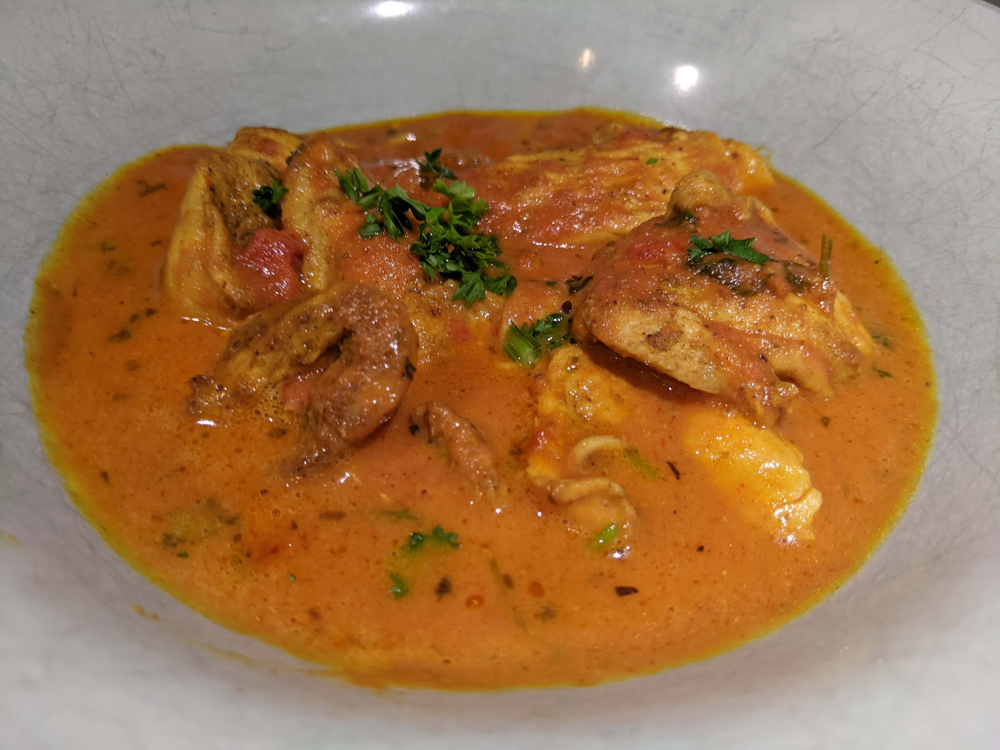

Butter Chicken

Ingredients
Chicken
800g boneless chicken
Aromatics:
2 red onion, roughly cut
Marinate spices:
4 tbsp butter chicken spice blend
Sauce:
1 can coconut milk, just the fat
600g crushed tomatoes can
2 tbsp swerve
Instructions
Prepare the chicken
-
Mix marinate spices ingredients on a large bowl.
-
Cut chicken into thin slices.
Add into marinate bowl and mix. Marinate for 15-20 minutes.
Cooking
-
On a Dutch oven, fry marinated chicken until almost done, then reserve.
-
Cook aromatics. Add in sauce and simmer for 15 to 20 minutes.
-
Add back the chicken and 8 tbsp butter. Simmer for 5 to 7 minutes.
Originally seen on Get Curried